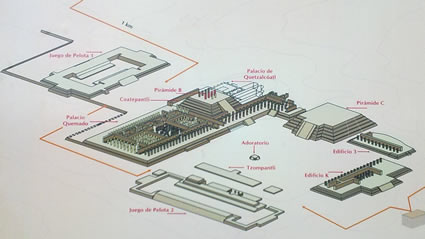
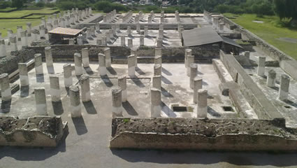

Tula fue una de las urbes más importantes de la época prehispánica habitada por la cultura Tolteca, con una gran influencia sobre los diferentes pueblos y culturas; ellos reclamaron ser los herederos de las artes en todas y cada una de sus ramas y de manera singular de la Serpiente Emplumada.
Fue construida sobre un amplio valle, en la confluencia del rio Rosas y el rio Tula, alcanzo una longitud aproximada de máxima de 6km entre 900 y 1150 d.C.
En la parte central se pueden apreciar un conjunto de edificios donde se encuentra una gran parte del material escultórico conocido de este centro. Un rasgo importante de este lugar es la fusión de la escultura dentro de la arquitectura y características muy peculiares que se pueden observar en el resto de Mesoamérica, como ejemplo esta Chichen Itza con el palacio de las 1000 columnas.
Los restos de Tollan se conocen hoy en día como la "zona arqueológica de Tula", ubicada a 80km al norte de la Ciudad de México, es un centro arqueológico ampliamente visitado por gran cantidad de turistas nacionales y extranjeros, los cuales son atraídos por quizá los personajes más conocidos de este lugar que son "los atlantes".
Dentro de la cosmovisión prehispánica se encuentran aquellos relatos pertenecientes a Quetzalcóatl en Tollan; el Palacio de Quetzalcóatl sería el lugar en el cual este personaje pudo haber habitado, pero el tiempo no fue benévolo con este sitio y se encuentra devastado por lo que no se puede apreciar su estado original; sin embargo gracias a la evidencia del posible uso de los gobernantes del Palacio Quemado lo convierte en una buena opción para interactuar con la aplicación de RA en la cual pudo haber estado Quetzalcóatl.

